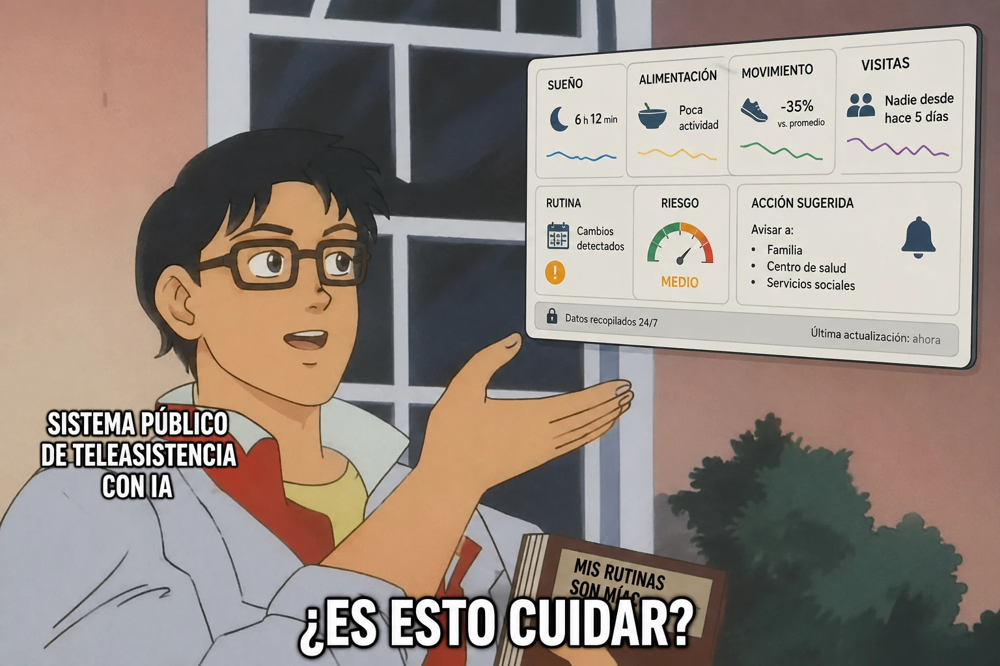

estrategIA #147 ·
Medir no es lo mismo que cuidar
El contexto
La escena pregunta si registrar rutinas basta para cuidar a una persona. Acompaña El cuidador que aprendió a llamar, un relato de ficción sobre teleasistencia, intimidad y la diferencia entre detectar señales y ofrecer presencia humana.
Publicado en: estrategIA #147 — HistorIAs veraniegas 2026 (4) El cuidador que aprendió a llamar
Leer el texto de la imagen
SISTEMA PÚBLICO DE TELEASISTENCIA CON IA ¿ES ESTO CUIDAR? SUEÑO: 6 h 12 min ALIMENTACIÓN: Poca actividad MOVIMIENTO: −35% vs. promedio VISITAS: Nadie desde hace 5 días RUTINA: Cambios detectados RIESGO: MEDIO ACCIÓN SUGERIDA: Avisar a Familia, Centro de salud, Servicios sociales Datos recopilados 24/7 Última actualización: ahora MIS RUTINAS SON MÍAS